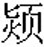

慷慨激昂的人说，“世道浇漓，人心不古，国粹将亡，此吾所为仰天扼腕切齿三叹息者也！”
我初听这话，也曾大吃一惊；后来翻翻旧书，偶然看见《史记》《赵世家》[118]里面记着公子成反对主父改胡服[119]的一段话：
“臣闻中国者，盖聪明徇智之所居也，万物财用之所聚也，贤圣之所教也，仁义之所施也，《诗》《书》礼乐之所用也，异敏技能之所试也，远方之所观赴也，蛮夷之所义行也；今王舍此而袭远方之服，变古之教，易古之道，逆人之心，而怫学者，离中国，故臣愿王图之也。”
这不是与现在阻抑革新的人的话，丝毫无异么？后来又在《北史》[120]里看见记周静帝的司马后的话：
“后性尤妒忌，后宫莫敢进御。尉迟迥女孙有美色，先在宫中，帝于仁寿宫见而悦之，因得幸。后伺帝听朝，阴杀之。上大怒，单骑从苑中出，不由径路，入山谷间三十余里；高

杨素等追及，扣马谏，帝太息曰，‘吾贵为天子，不得自由。’”这又不是与现在信口主张自由和反对自由的人，对于自由所下的解释，丝毫无异么？别的例证，想必还多，我见闻狭隘，不能多举了。但即此看来，已可见虽然经过了这许多年，意见还是一样。现在的人心，实在古得很呢。
中国人倘能努力再古一点，也未必不能有古到三皇五帝[121]以前的希望，可惜时时遇着新潮流新空气激荡着，没有工夫了。
在现存的旧民族中，最合中国式理想的，总要推锡兰岛的Vedda族[122]。他们和外界毫无交涉，也不受别民族的影响，还是原始的状态，真不愧所谓“羲皇上人”[123]。
但听说他们人口年年减少，现在快要没有了：这实在是一件万分可惜的事。
注 释
[117] 本篇最初发表于1919年5月《新青年》第六卷第五号，署名唐俟。
[118] 《史记》 汉代司马迁著，一百三十卷。我国第一部纪传体通史。世家，是该书中传记的一体，主要记叙王侯的事迹。《赵世家》记述春秋战国时赵国的世系和历史。
[119] 公子成反对主父改胡服 主父即战国时赵国国君武灵王。公元前307年（赵武灵王十九年），他推行军事改革，改穿匈奴族服装，学习骑射。这一措施，曾遭到公子成的反对。
[120] 《北史》 唐代李延寿撰，一百卷。记载我国南北朝时代北方国家魏、齐、周和隋的历史。这里所引的应为隋文帝独孤后的事，见该书卷十四《后妃列传下》。
[121] 三皇五帝 我国传说中的上古帝王。西汉伏生《尚书大传》中，以燧人、伏羲、神农为三皇；《史记·五帝本纪》中，以黄帝、颛顼、帝喾、唐尧、虞舜为五帝。
[122] Vedda族 维达族，锡兰岛（今斯里兰卡）最古老的种族。他们住在山林里，大都过着狩猎生活，保存着母系社会的习俗和万物有灵的信仰。
[123] 羲皇上人 指伏羲氏（羲皇）以前的人。晋代陶潜《与子俨等疏》：“五六月中，北窗下卧，遇凉风暂至，自谓是羲皇上人。”原意是指想象中的上古时代过着闲适生活的人们。这里是就所谓“羲皇上人”的原始状态而言。